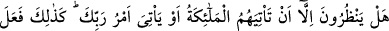
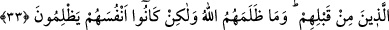

et-Te’vîlâtü’n-Necmiyye’de der ki: Âyet işâret etmektedir ki muttakîlerin cennete
girmesi, amellerini sâlih kılmalarının karşılığıdır. Orada yükselmeleri ahlâklarını ıslah
ettikleri için bir mükâfattır. Sıdk koltuklarına çıkmaları ise hâllerini ıslah ettikleri
içindir. Her muttakînin Allah Teâlâ ile muâmelesine göre bir makamı vardır. Bir hadiste
şöyle buyrulmuştur: “Adn cenneti, hiçbir gözün görmediği ve hiçbir beşerin hatırına
gelmeyen Allah’ın yurdudur. Nebiler, sıddîklar ve şehidler dışında kimse orada
ikâmet etmez. Allah Teâlâ: “Sana giren kimseye ne mutlu!” buyurur.” [143]
Bahru’l-ulûm’da der ki: ‘Sıddîk’ ile kasdedilen, Allah’a ve peygamberine îmân eden
ve onlar arasında hiçbir ayırım yapmayan kişidir. Bunun delili de şu âyettir: “Allah’a
ve peygamberlerine inananlar yok mu, işte sıddîklar onlardır.” (el-Hadîd, 57/19)
Yine şu anda tefsîrini yaptığımız âyetin de buna delil olduğu âşikârdır. Peygamber
(s.a.)’in şu hadîsi de bunu desteklemektedir. “Allah Teâlâ yed-i kudretiyle Adn
cennetlerini binâ etti. Harcını miskten, toprağını ve taşlarını inciden, bir tuğlasını
altın, bir tuğlasını gümüşten kıldı. Yed-i kudretiyle ağaçlarını dikti. O cennete:
“Konuş!” buyurdu. Cennet: “Mü’minler felâha erdi.” (el-Mü’minûn, 23/1) diye
cevap verdi. Bunun üzerine Allah Teâlâ: “Ey melikler yeri! Ne mutlu sana.”
buyurdu.” [144] Cennetin “Mü’minler felâha erdi.” sözünde, cennet ehlinin Allah’a ve
peygamberlerine îmân edenler olduğuna tenbih vardır.
Fakir (Bursevî) der ki: Şüphesiz îmân ehlinin tamamı cennete girecektir. Fakat îmân
mertebelerindeki derecelerinin farklılığına göre cennetteki yerleri de farklıdır. Firdevs
ve Adn havâs ehli ve onlara ilâve edilen mü’minler içindir. Bu ikisi dışındaki yerler
avâm içindir. Îmânın kemâli melekût âleminin sırlarını mükâşefe, ceberût nurlarını
müşâhede ile hâsıl olur. Buna sâhip olan kişi en büyük sıddîktır. Söylediklerimizin
delîli Allah Teâlâ’nın şu âyetidir: “İman edip iyi davranışlarda bulunanlara gelince,
onlar için makam olarak Firdevs cennetleri vardır.” (el-Kehf, 18/107) Bu âyetin
tefsirinde şöyle denilmiştir: “Firdevs cennetinin ehli iyiliği emreden, kötülükten
sakındıranlardır. Bu mutlak îmândan daha üstün bir vasıftır. Bu yüzden bu cennetler
onlara vaadolundu. Çünkü dünyâda faydalı ilim ve fazîletli ahlâklarla üstün mertebede
olanlar cennette de en yüksek derecededirler.
33. (Kâfirler) kendilerine meleklerin gelmesinden veya Rablerinin emrinin
gelmesinden başka bir şey mi bekliyorlar? Onlardan öncekiler de böyle
yapmışlardı. Allah onlara zulmetmedi, fakat onlar kendilerine zulmediyorlardı.
Mekke kâfirleri “kendilerine meleklerin” yâni azabla ruhlarını kabzedecek olan ölüm